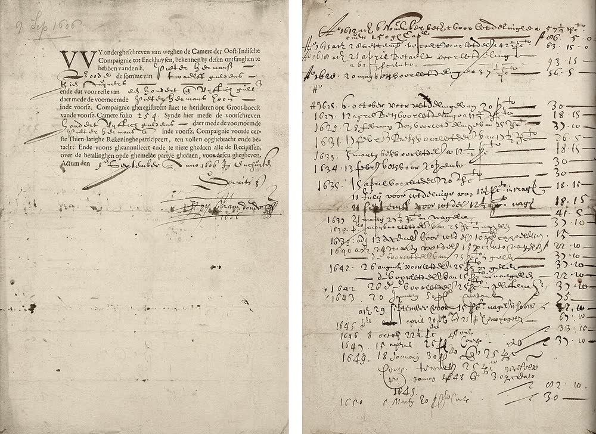
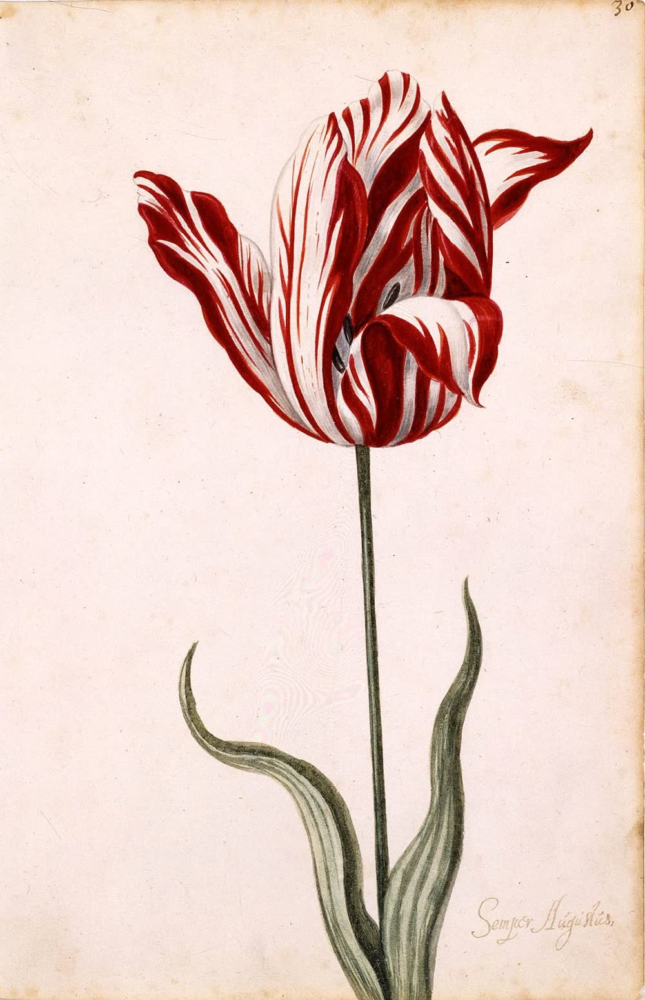
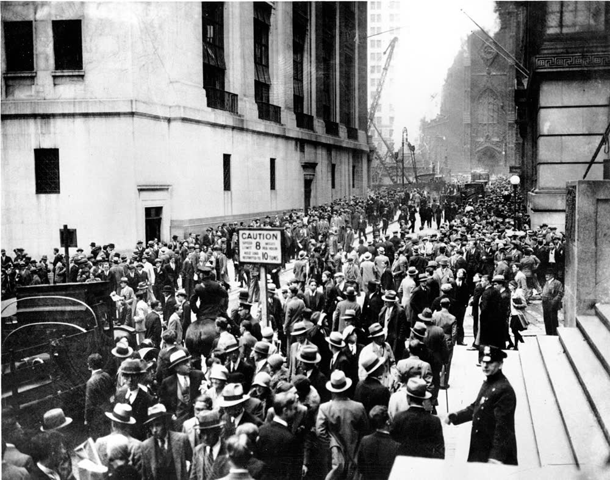

주식의 역사 — 1602년 동인도회사부터 코스피까지The History of Stocks — From the 1602 East India Company to KOSPI
- 주식은 회사를 잘게 나눈 조각이고, 주주는 그 회사의 작은 주인입니다.A stock is a small piece of a company, and a shareholder is a small owner.
- 주식시장은 400년 넘게 거품과 폭락을 되풀이하면서도 길게 보면 성장해 왔습니다.For over 400 years, markets have repeated bubbles and crashes, yet grown over the long run.
- 역사가 주는 교훈은 "이번엔 다르다"는 말을 조심하라는 것입니다.History teaches us to be careful when we hear "this time it's different."
요즘은 스마트폰으로 누구나 주식을 삽니다. 그런데 주식이라는 것은 언제, 왜 생겼을까요? 400여 년 전 바다를 건너던 배 이야기에서 시작해, 우리 코스피까지 주식의 긴 역사를 왕초보 눈높이로 정리했습니다.Today anyone can buy stocks on a smartphone. But when and why were stocks born? From ships crossing the sea 400 years ago to Korea's KOSPI, here is a beginner's history of stocks.
1. 1602년, 세계 최초의 주식회사
1. 1602, the world's first joint-stock company향신료를 싣고 아시아까지 다녀오는 항해는 돈이 많이 들고 위험했습니다. 배가 가라앉으면 투자자는 모든 것을 잃었지요. 1602년 세워진 네덜란드 동인도회사(VOC)는 많은 사람에게서 돈을 모으고 그 대가로 지분 증서(주식)를 주었습니다. 위험을 여러 사람이 나눠 지고 이익도 나누는 구조입니다. 이 주식을 사고팔던 암스테르담의 거래 장소가 오늘날 증권거래소의 뿌리로 꼽힙니다.Sailing to Asia for spices was costly and risky. If a ship sank, investors lost everything. The Dutch East India Company (VOC), founded in 1602, raised money from many people and gave them shares in return. Risk and profit were shared. Amsterdam, where these shares were traded, is seen as the root of today's stock exchanges.

2. 1637년 튤립 버블과 1720년 남해 버블
2. Tulip mania (1637) and the South Sea Bubble (1720)네덜란드에서는 희귀한 튤립 알뿌리 값이 터무니없이 오르다가 1637년 갑자기 무너진 일이 있었습니다. 튤립 파동이라고 불리며 '거품(버블)'의 상징이 되었습니다(실제 피해 규모는 학자마다 의견이 다릅니다). 1720년 영국에서는 남해회사 주가가 몇 달 만에 몇 배로 뛰었다가 폭락했습니다. 사람들이 "다들 부자가 된다"는 분위기에 휩쓸릴 때 무슨 일이 생기는지 보여 주는 이야기입니다.In the Netherlands, prices of rare tulip bulbs soared and suddenly collapsed in 1637. Tulip mania became a symbol of bubbles (historians disagree on how large the damage was). In 1720, South Sea Company shares in Britain multiplied in months and then crashed. It shows what happens when people follow the mood that "everyone is getting rich."

3. 뉴욕 증권거래소와 다우 지수
3. The New York Stock Exchange and the Dow1792년 뉴욕 월가의 나무(버튼우드) 아래에서 주식 중개인 24명이 거래 규칙을 맺은 것이 뉴욕 증권거래소의 시작으로 전해집니다. 1896년에는 대표 회사들의 주가를 묶은 다우존스 산업평균지수가 만들어져 시장 전체의 온도를 재는 체온계가 되었습니다.In 1792, 24 brokers signed trading rules under a buttonwood tree on Wall Street, the traditional start of the NYSE. In 1896, the Dow Jones Industrial Average was created as a thermometer for the whole market.

4. 1929년 대폭락
4. The 1929 crash1920년대 미국은 빚을 내서 주식을 사는 사람이 많았습니다. 1929년 10월 주가가 무너지기 시작했고, 다우 지수는 1932년까지 고점 대비 약 90% 가까이 떨어졌습니다. 은행이 줄줄이 문을 닫고 대공황으로 이어졌습니다. 이 사건 뒤 미국은 증권거래위원회(SEC)를 만들어 시장 규칙을 강화했습니다.In the 1920s, many Americans borrowed money to buy stocks. Prices began to collapse in October 1929, and by 1932 the Dow had fallen nearly 90% from its peak. Banks closed one after another, leading to the Great Depression. Afterwards the US created the SEC to tighten market rules.

5. 블랙먼데이, 닷컴 버블, 2008년
5. Black Monday, the dot-com bubble and 2008- 1987년 10월 19일 블랙먼데이: 다우 지수가 하루에 약 22.6% 떨어졌습니다. 지금도 하루 하락률 최고 기록입니다.Black Monday, October 19, 1987: the Dow fell about 22.6% in one day, still the record daily drop.
- 2000년 닷컴 버블: 인터넷 회사라면 이익이 없어도 주가가 치솟다가, 나스닥 지수가 2000년 3월 고점에서 2002년까지 약 78% 떨어졌습니다.The 2000 dot-com bubble: internet stocks soared without profits, and the Nasdaq fell about 78% from its March 2000 peak by 2002.
- 2008년 금융위기: 9월 리먼브러더스 파산 뒤 세계 주가가 크게 떨어졌다가, 이후 10년 넘게 긴 상승장이 이어졌습니다.The 2008 financial crisis: stocks fell sharply after Lehman Brothers failed in September, followed by a long rise for over ten years.
6. 우리나라 주식시장
6. Korea's stock market1956년 대한증권거래소가 문을 열었습니다. 지금 우리가 보는 코스피 지수는 1980년 1월 4일의 시가총액을 100으로 정해 계산합니다. 1989년 처음 1,000을 넘었고, 1997년 외환위기 뒤인 1998년에는 300 아래까지 떨어졌으며, 2007년 처음 2,000을 넘었습니다. 1996년에는 코스닥 시장이 열렸습니다. 숫자가 오르내린 길을 보면 우리 경제의 굴곡이 그대로 담겨 있습니다.The Korea Stock Exchange opened in 1956. KOSPI is calculated with the market value of January 4, 1980 set to 100. It first passed 1,000 in 1989, fell below 300 in 1998 after the Asian financial crisis, and passed 2,000 in 2007. KOSDAQ opened in 1996.
7. 역사가 주는 교훈
7. Lessons from history존 템플턴은 "투자에서 가장 위험한 네 단어는 '이번엔 다르다(this time it's different)'"라고 했습니다. 거품은 늘 새로운 이야기와 함께 옵니다. 튤립, 철도, 인터넷, 그리고 요즘의 인공지능까지 모두 세상을 바꾼 진짜 변화였지만, 가격이 앞서 달릴 때는 크게 넘어지기도 했습니다. 조율에서도 한 번에 너무 높이 올리면 줄이 끊어지듯, 시장도 너무 빨리 오르면 그만큼 반동이 옵니다.John Templeton said the four most dangerous words in investing are "this time it's different." Bubbles always come with a new story: tulips, railways, the internet and now AI. They were real changes, but when prices ran ahead, they fell hard. Raising a string too high at once breaks it; markets that rise too fast bounce back too.
📘 오늘의 영어 단어
📘 Today's English words| 영어 | 발음 | 뜻 |
|---|---|---|
| stock / share | 스톡 / 셰어 | 주식 |
| shareholder | 셰어홀더 | 주주 |
| stock exchange | 스톡 익스체인지 | 증권거래소 |
| dividend | 디비덴드 | 배당 |
| bubble | 버블 | 거품 |
| crash | 크래시 | 폭락 |
| index | 인덱스 | 지수 |
| market value | 마켓 밸류 | 시가총액 |
| bull market | 불 마켓 | 상승장 |
| bear market | 베어 마켓 | 하락장 |
쉬운 예문
- A shareholder owns a small part of the company.
주주는 회사의 작은 부분을 소유합니다. - The stock market crashed in 1929.
주식시장은 1929년에 폭락했습니다. - Be careful when everyone says prices will only go up.
모두가 오르기만 한다고 말할 때 조심하세요.
🔊 버튼을 누르면 브라우저에 들어 있는 음성으로 영어를 읽어 줍니다(기기에 따라 안 될 수 있어요).
자주 묻는 질문
Frequently asked questions주식을 사면 정말 회사 주인이 되나요?Do I really become an owner when I buy a stock?
네, 아주 작은 비율이지만 회사의 소유권을 갖습니다. 주주총회에서 의결권을 행사하고, 회사가 이익을 나누면 배당을 받을 수 있습니다.Yes, a very small part. You can vote at shareholder meetings and receive dividends when the company shares profits.
코스피 100은 언제 기준인가요?What is the base date of KOSPI 100?
1980년 1월 4일 유가증권시장 시가총액을 100으로 정했습니다. 코스피가 5,000이면 그때보다 시가총액 기준으로 약 50배가 되었다는 뜻입니다.The market value on January 4, 1980 was set to 100. A KOSPI of 5,000 means market value is about 50 times that level.
거품인지 어떻게 알 수 있나요?How can I tell if it is a bubble?
미리 정확히 알기는 매우 어렵습니다. 다만 빚내서 사는 사람이 급증하고, 이익보다 이야기로 주가가 오르고, "모두가 부자가 된다"는 분위기가 퍼질 때는 조심하라고 역사가 알려 줍니다.It is very hard to know in advance. But history warns us when borrowing to buy surges, prices rise on stories rather than profits, and the mood says "everyone is getting rich."
※ 이 글은 투자 권유가 아닌 공부 자료입니다.※ This page is study material, not investment advice. 숫자와 연도는 널리 알려진 역사 자료를 바탕으로 쉽게 정리했으며, 실제 투자 판단은 본인 책임입니다. 사진 출처: VOC aandeel 9 september 1606.jpg (퍼블릭 도메인) · Semper Augustus Tulip 17th century.jpg (퍼블릭 도메인) · Exterior of Stock Exchange, New York City LCCN95501303.jpg (퍼블릭 도메인 (미국 의회도서관)) · Crowds gathering outside New York Stock Exchange.jpg (퍼블릭 도메인 (AP, 1929)). 그림과 움직이는 그림은 직접 만들었습니다. · 📞 010-8756-8740